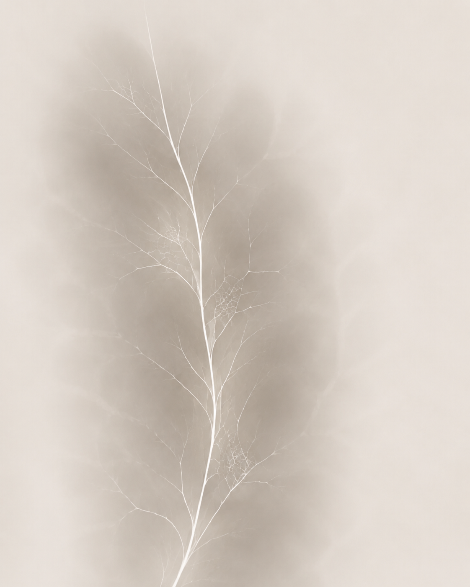
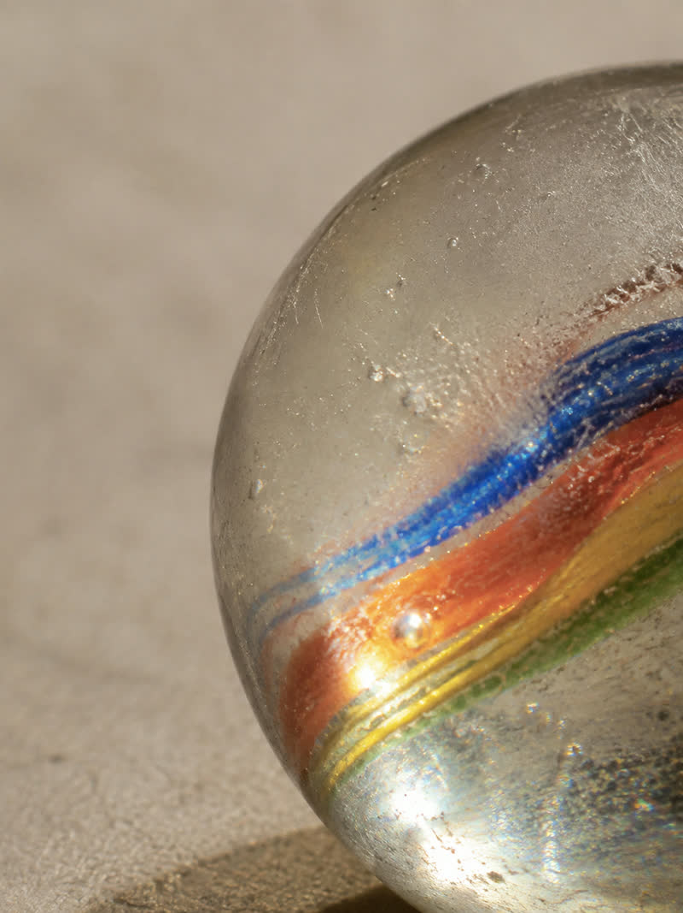
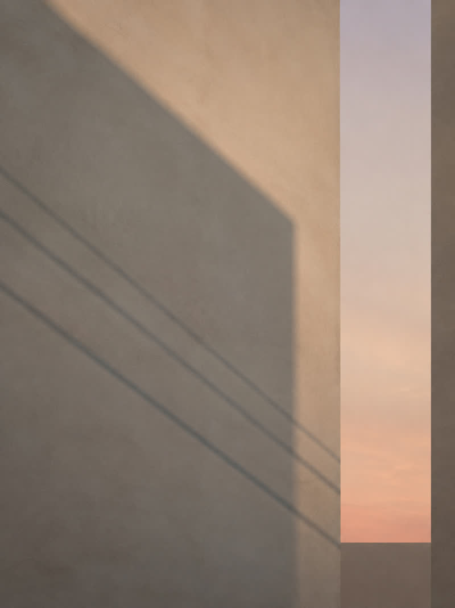

We design recovery.
회복은 잠시 숨을 고르고 감각을 정돈하며, 자신에게 맞는 방식과 고유한 결을 발견해 다시 나답게 나아가는 과정입니다.
VEIN
잎맥 · 혈관 · 내부를 흐르는 결
AURA
사람이나 공간을 둘러싼 기운과 분위기
VEIN + AURA = VEINORA
내면의 결은 다시 선명해지고, 회복된 감각은 바깥으로 부드럽게 퍼집니다.
“어떻게 다시 나다운 감각을 되찾을 수 있을까?”
01
DESIGN
VEINORA가 흐려진 감각을 정돈하는 회복의 경험을 설계합니다.
02
DISCOVER
각자는 자신에게 맞는 회복의 방식을 발견합니다.
03
RECOVER
그 경험을 통해 나다운 감각을 다시 되찾습니다.
TASTE
맛으로 경험하는 회복
Tea · Low Alcohol · Food
SCENT
향으로 기억하는 회복
Perfume · Diffuser · Room Spray
SPACE
머묾으로 만드는 회복
Light · Temperature · Material
SOUND
소리로 정돈하는 회복
Music · Sound Experience
BODY
몸의 긴장을 풀어내는 회복
Spa · Head Spa · Bath
TASTE ORIGIN
VEINORA의 이야기는 대흥의 한 칵테일 바에서 시작됐습니다.
술을 잘 마시지 못하는 바텐더에게 술자리는 시작하기 전의 설렘만큼, 그 시간이 지난 뒤의 상태도 중요했습니다. 늦은 밤까지 즐기고도 다음 날을 후회하지 않는 것, 출근을 앞둔 날에도 부담 없이 머물며 나다운 감각을 지키는 방법을 고민했습니다.
그 질문에서 저도수 칵테일과 차를 활용한 새로운 경험이 시작됐고, 즐거움 이후의 나까지 살피는 태도는 VEINORA가 말하는 '회복'의 출발점이 되었습니다.
현재 대흥에서는 차와 저도수 칵테일, 푸드 페어링을 통해
맛으로 경험하는 회복을 제안합니다.
오늘 필요한 상태를 골라보세요.
QUIET STREET 10
노을이 내려앉은 골목, 하루의 속도를 천천히 늦추는 시간.
분주함 → 정돈QUIET STREET 12
비가 지난 뒤, 맑아진 공기 속을 천천히 걷는 시간.
흐림 → 선명함QUIET STREET NAS
늦은 밤, 재즈가 흐르는 공간에 조용히 머무는 시간.
산만함 → 몰입WARM MEETING
좋은 사람과 마주 앉아 대화가 자연스럽게 이어지는 시간.
긴장 → 편안함
LUCKY CHILD 12
잊고 있던 즐거운 기억이 문득 떠오르는 순간.
무뎌짐 → 생동감LUCKY CHILD 14
익숙한 기억을 조금 더 천천히, 깊게 꺼내 보는 시간.
들뜸 → 여운
PEACE & HEALING
하루의 끝, 속도를 늦추고 나에게 다시 시선이 머무는 시간.
소모 → 이완QUIET STREET 10
노을이 내려앉은 골목, 하루의 속도를 천천히 늦추는 시간.
분주함 → 정돈QUIET STREET 12
비가 지난 뒤, 맑아진 공기 속을 천천히 걷는 시간.
흐림 → 선명함QUIET STREET NAS
늦은 밤, 재즈가 흐르는 공간에 조용히 머무는 시간.
산만함 → 몰입WARM MEETING
좋은 사람과 마주 앉아 대화가 자연스럽게 이어지는 시간.
긴장 → 편안함LUCKY CHILD 12
잊고 있던 즐거운 기억이 문득 떠오르는 순간.
무뎌짐 → 생동감LUCKY CHILD 14
익숙한 기억을 조금 더 천천히, 깊게 꺼내 보는 시간.
들뜸 → 여운PEACE & HEALING
하루의 끝, 속도를 늦추고 나에게 다시 시선이 머무는 시간.
소모 → 이완QUIET STREET 10
노을이 내려앉은 골목, 하루의 속도를 천천히 늦추는 시간.
분주함 → 정돈QUIET STREET 12
비가 지난 뒤, 맑아진 공기 속을 천천히 걷는 시간.
흐림 → 선명함QUIET STREET NAS
늦은 밤, 재즈가 흐르는 공간에 조용히 머무는 시간.
산만함 → 몰입WARM MEETING
좋은 사람과 마주 앉아 대화가 자연스럽게 이어지는 시간.
긴장 → 편안함LUCKY CHILD 12
잊고 있던 즐거운 기억이 문득 떠오르는 순간.
무뎌짐 → 생동감LUCKY CHILD 14
익숙한 기억을 조금 더 천천히, 깊게 꺼내 보는 시간.
들뜸 → 여운PEACE & HEALING
하루의 끝, 속도를 늦추고 나에게 다시 시선이 머무는 시간.
소모 → 이완Low ABV Collection
Cocktail · approx. 5%
오늘을 즐기되, 나다운 감각은 잃지 않도록.
Food Collection
BURRATA & SEASONAL FRUIT
부라타 · 제철 과일
BANANA BRÛLÉE
바나나 브륄레 · 부라타 · 비스킷
VEINORA PAIRING PLATE
호두곶감 치즈 · 큐브치즈 · 계절 과일
회복의 방식은 사람마다 다릅니다.
각자가 자신에게 맞는 방식을 발견하고
다시 나다운 감각을 되찾을 수 있는 경험을 설계합니다.